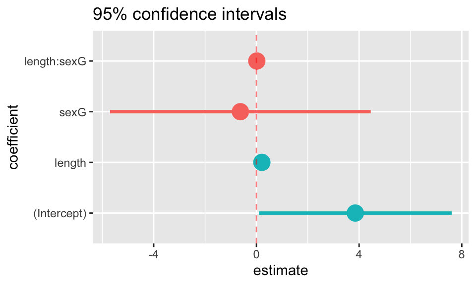
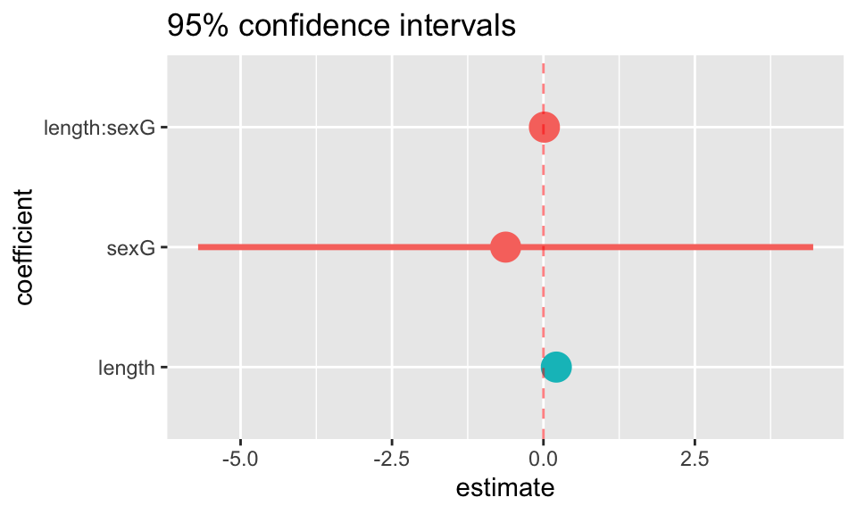
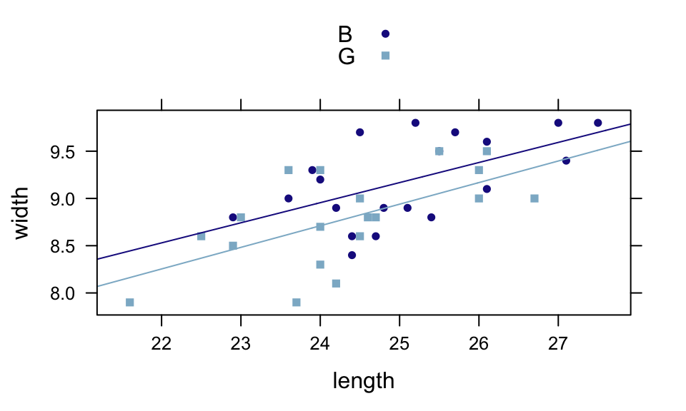
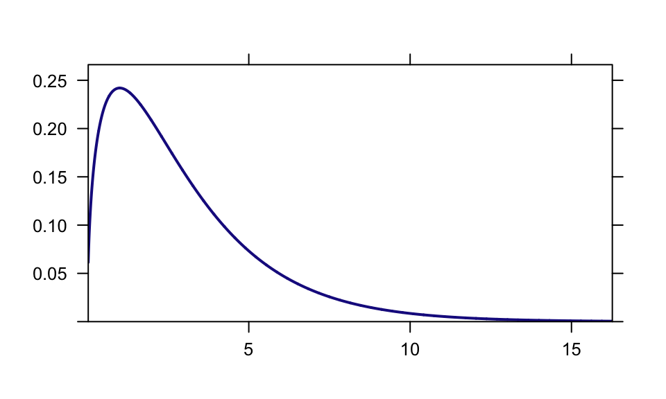
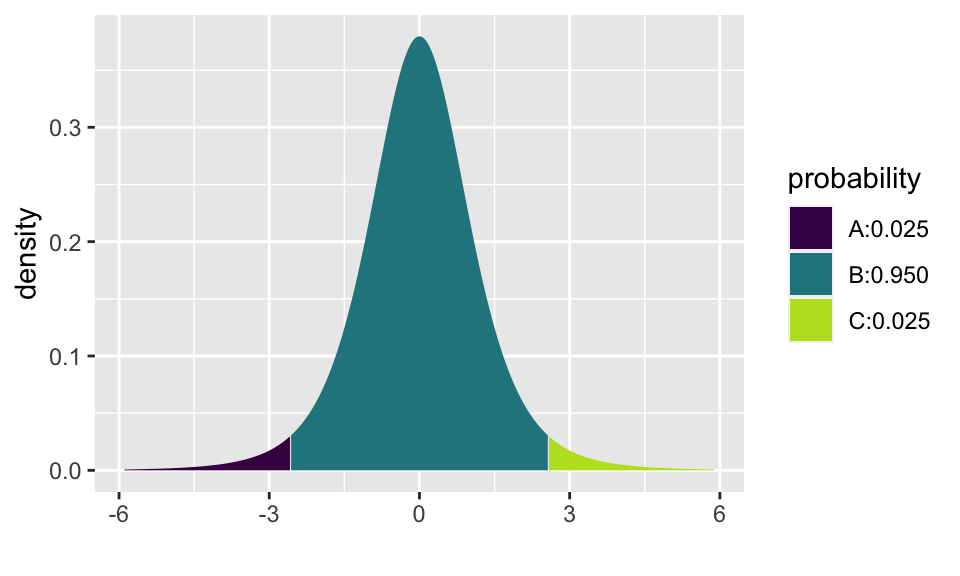
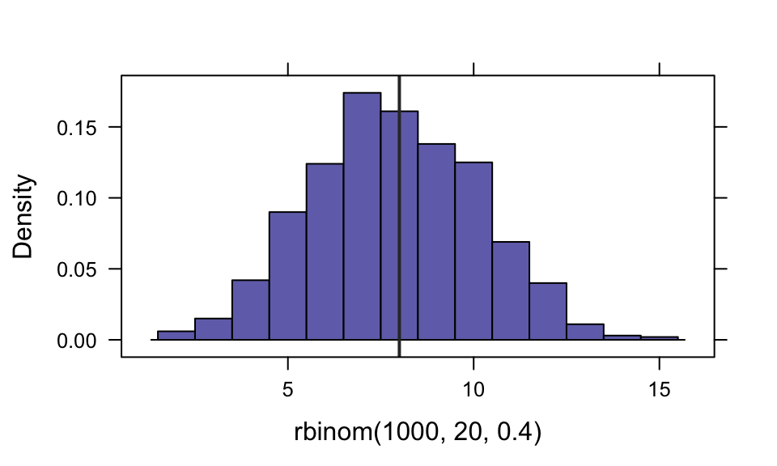
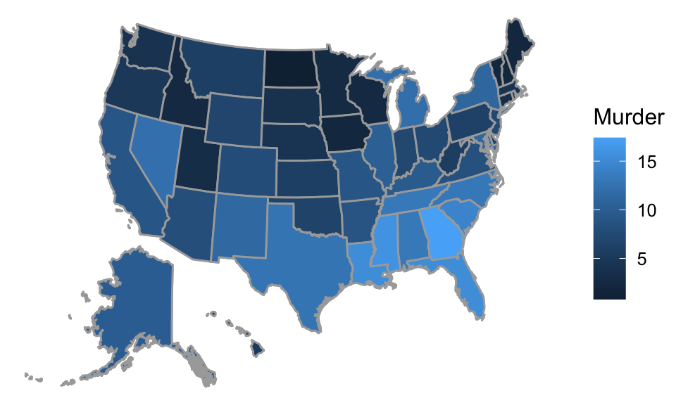

Graphics with the mosaic and lattice packages
Randall Pruim
August, 2014
This vignette is simply a suite of plots that exist primarily as part of our quality control for the package. But since the examples might be useful to others as well, we’ve added this as a vignette in the package.
This way of doing this is largely superceded by our ggformula package which provides a formula interface to ggplot2. You might also like to see the vignette that compares using lattice to using ggformula.
lattice extras
The mosaic package resets the default panel function for histograms. This changes the default for bin selection and provides some additional arguments to histogram.

ladd()
ladd() provides a relatively easy way to add additional things to a lattice graphic.
xyplot( rnorm(100) ~ rnorm(100) )
ladd( grid.text("Here is some text", x=0, y=0, default.units="native") )
ladd( panel.abline( a=0, b=1, col="red", lwd=3, alpha=.4 ) )
ladd( panel.rect(x=-1, y=-1, width=1, height=1, col="gray80", fill="lightsalmon"))
ladd( panel.rect(x=0, y=0, width=2, height=2, col="gray80", fill="lightskyblue"),
under=TRUE)
mplot()
In addition to the interactive uses of mplot(), it can be used in place of plot() in several settings.
require(gridExtra)
mod <- lm(width ~ length * sex, data = KidsFeet)
mplot(mod, which = 1:7, multiplot = TRUE, ncol = 2)## `geom_smooth()` using formula 'y ~ x'
## `geom_smooth()` using formula 'y ~ x'
## `geom_smooth()` using formula 'y ~ x'
## `geom_smooth()` using formula 'y ~ x'
mplot(mod, which=1:7, system="ggplot", ncol=2)## `geom_smooth()` using formula 'y ~ x'
## `geom_smooth()` using formula 'y ~ x'
## `geom_smooth()` using formula 'y ~ x'
## `geom_smooth()` using formula 'y ~ x'
mplot(mod, which=7)
mplot(mod, which=7, rows=-1)


plotFun() and makeFun()
## 1
## 7.041437## 1
## 6.654868xyplot(width ~ length, groups = sex, data = KidsFeet, auto.key=TRUE)
plotFun( L(length, sex="B") ~ length, add=TRUE, col=1 )## converting numerical color value into a color using lattice settingsplotFun( L(length, sex="G") ~ length, add=TRUE, col=2 )## converting numerical color value into a color using lattice settings
## converting numerical color value into a color using lattice settings
For logistic regression, makeFun() handles the conversion back to probabilities by default.
mod <- glm( SmokeNow =="Yes" ~ Age + Race3, data=NHANES, family=binomial())
SmokerProb <- makeFun(mod)
xyplot( SmokeNow=="Yes" ~ Age, groups=Race3, data=NHANES, alpha=.01, xlim=c(20,90) )
plotFun(SmokerProb(Age, Race3="Black") ~ Age, col="black", add=TRUE)
plotFun(SmokerProb(Age, Race3="White") ~ Age, col="red", add=TRUE)
ladd(grid.text("Black", x=25, y=SmokerProb(25, Race="Black"),hjust = 0, vjust=-0.2,
gp=gpar(col="black"),
default.units="native"))
ladd(grid.text("White", x=25, y=SmokerProb(25, Race="White"),hjust = 0, vjust=-0.2,
gp=gpar(col="red"),
default.units="native"))


Visualizing distributions
plotDist("chisq", df=3)
plotDist("chisq", df=3, kind="cdf")
xpnorm(80, mean=100, sd=15)## ## If X ~ N(100, 15), then## P(X <= 80) = P(Z <= -1.333) = 0.09121## P(X > 80) = P(Z > -1.333) = 0.9088## 
## [1] 0.09121122## ## If X ~ N(100, 15), then## P(X <= 80) = P(Z <= -1.333) = 0.09121 P(X <= 120) = P(Z <= 1.333) = 0.90879## P(X > 80) = P(Z > -1.333) = 0.90879 P(X > 120) = P(Z > 1.333) = 0.09121## 
## [1] 0.09121122 0.90878878pdist("chisq", 4, df=3)
## [1] 0.7385359pdist("f", 3, df1=5, df2=20)
## [1] 0.9647987
## [1] -2.570582 2.570582

plotDist("norm", col="blue", mean=2, xlim=c(-4,8))
plotDist("norm", mean=5, col="green", kind='histogram', add=TRUE) # add, overtop
plotDist("norm", mean=0, col="red", kind='histogram', under=TRUE) # add, but underneath!
Maps
The mosaic package now provides facilities for producing choropleth maps. The API is still under developement and may change in future releases.
## Mapping API still under development and may change in future releases.
Looks like it is safer to live in the North:
## Mapping API still under development and may change in future releases.
Here is a sillier example
## Mapping API still under development and may change in future releases.## Warning in standardName(x, countryAlternatives, ignore.case = ignore.case, : 99
## items were not translated